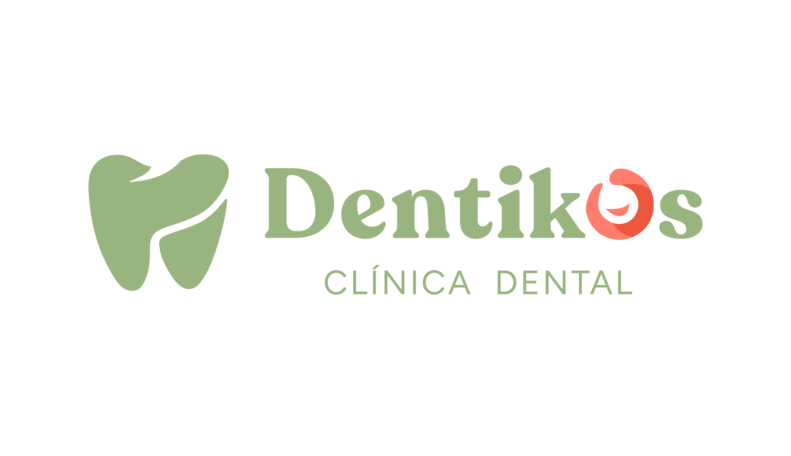
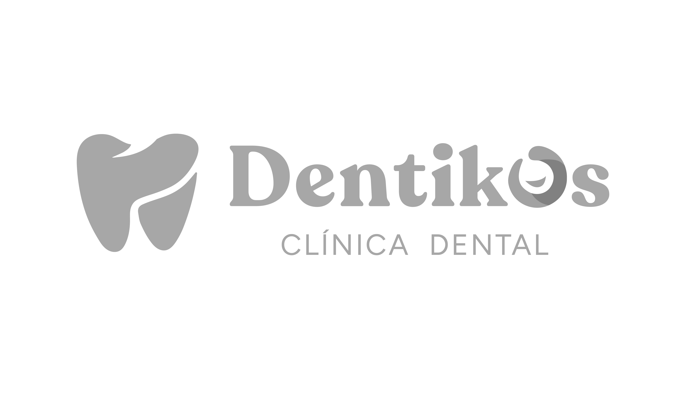
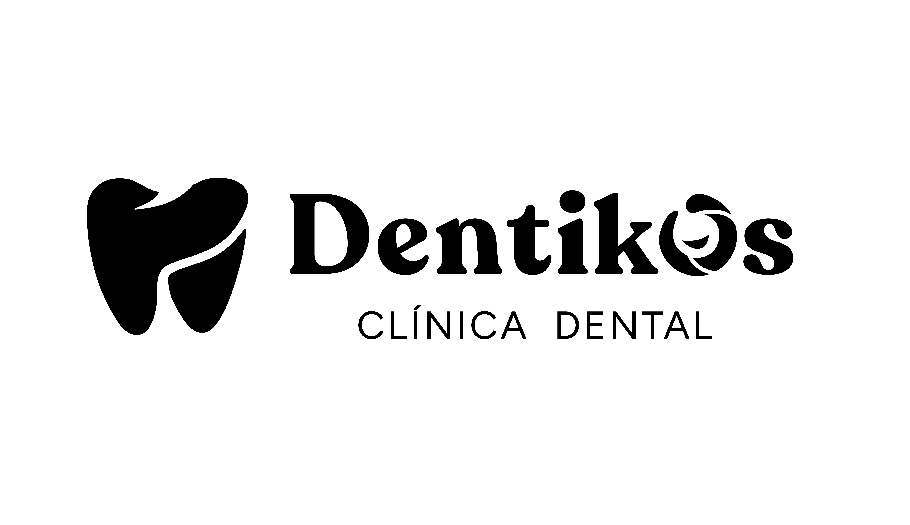
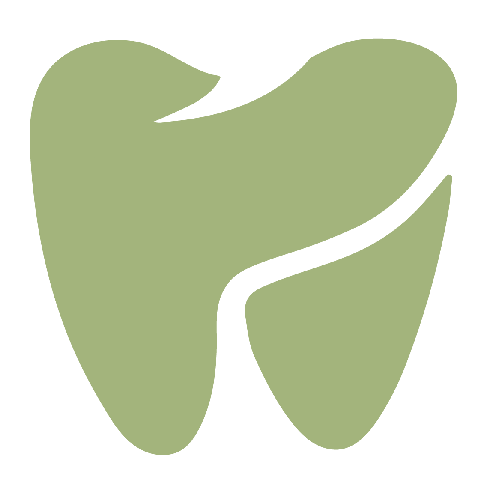
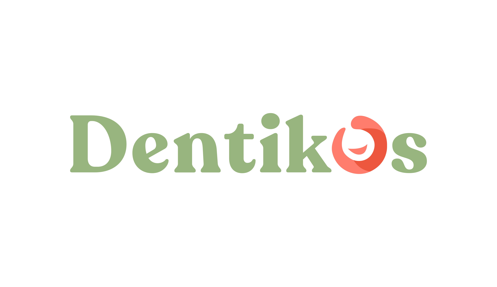

Un manual corto y útil. Cuatro capítulos de identidad, un recordatorio de voz y algunas piezas para empezar a aplicar la marca sin perder el tono.
Dentikos existe para que ir al dentista deje de dar miedo. Somos una clínica familiar que cuida de mayores y pequeños con cercanía, rigor clínico y un lenguaje que se entiende a la primera.
“Queremos reinventar la experiencia de ir al dentista. Debe sentirse en positivo para ti y para tu familia.”
Atendemos a familias que llegan con dudas, miedos heredados o una experiencia previa que no quieren repetir. Nuestro trabajo empieza antes del sillón: escuchar, explicar y devolver el control al paciente.
La marca debe sonar a eso. A consulta luminosa, a conversación tranquila, a equipo humano que sabe lo que hace y lo cuenta sin tecnicismos.
Si una pieza transmite frío hospitalario, autoridad médica distante o urgencia comercial, está fuera de marca.
Tuteamos. Miramos a los ojos. Explicamos con palabras de andar por casa. El paciente es el protagonista, no el procedimiento.
Tonos tierra, ritmos pausados, espacios con aire. Queremos que la espera también forme parte del cuidado.
Rigor clínico sin bata fría. Contamos el porqué de cada tratamiento y acompañamos el proceso entero, no solo la visita.
El logo de Dentikos nace de una dualidad: una familia tipográfica serif, redonda y cálida, y una “o” coral con forma de sonrisa — el gesto que resume para qué estamos. El isotipo es una muela estilizada que se lee como dos figuras abrazadas, padre e hijo.

Usa siempre la versión de color sobre fondos claros y neutros. Las versiones monocromas están pensadas para impresos de una tinta, grabados o fondos fotográficos con poco contraste.


La muela se puede usar sin wordmark en redes sociales (avatar), favicon, sellos, pines y cualquier aplicación pequeña o cuadrada. Respeta siempre el área de protección.


Para usos donde ya hay contexto de marca (papelería interna, firmas de email, cabecera web) se puede emplear el wordmark sin la bajada “Clínica Dental”.

El área de protección equivale a la altura de la “o” del wordmark (X). Ningún otro elemento gráfico, texto ni borde de página debe invadir ese espacio.
Un sistema de calma. El verde salvia manda: es el color de la marca, de la confianza serena y del entorno clínico amable. El coral aparece como acento humano — la sonrisa del logo — y nunca domina. Una segunda línea de tonos tierra introduce calidez para piezas editoriales, señalética y fondos.
El protagonista. 60–70% de cualquier pieza. Aporta calma, naturalidad y confianza clínica.
El gesto humano. Máximo 10–15% por pieza. Para CTAs, detalles, iconografía clave y momentos de cercanía.
Fondos, tipografías secundarias, bloques de sección. La tonalidad 400 es la oficial del logotipo.
Acento humano. El 400 es la tonalidad oficial del símbolo. Úsalo con intención: poco y bien.
Arena, oliva, caqui y toffee. Aportan calidez editorial a fondos, ilustraciones y material impreso. Nunca se usan como color principal de marca.
La base respiratoria de la marca. Sustituyen al blanco puro — demasiado frío para el tono Dentikos — y a los grises clínicos.
Una guía para equilibrar cualquier pieza. La marca respira cuando el neutro manda y el coral aparece como pincelada final.
Una pareja que imita la personalidad del logo: una serif contemporánea, curva y con carácter para los titulares, y una sans humanista, redondeada y legible para el cuerpo. Cálida y clínica al mismo tiempo.
Guía rápida para mantener consistencia en web, redes e impresos.
| Uso | Familia | Peso | Ejemplo |
|---|---|---|---|
| H1 — Hero | Fraunces | Regular 400 | Sonríe tranquilo. |
| H2 — Sección | Fraunces | Regular 400 | Servicios del día a día |
| H3 — Subsección | Fraunces | Medium 500 | Odontología familiar |
| Destacado / cita | Fraunces Italic | Light 300 italic | Te acompañamos desde el primer día. |
| Cuerpo | Nunito | Regular 400 | Cuida tu salud dental con un equipo cercano. |
| UI · botón | Nunito | Semibold 600 | Pedir cita |
| Eyebrow · etiqueta | JetBrains Mono | Medium 500 | CLÍNICA DENTAL |
Escribimos como un buen vecino que resulta ser dentista. Sin tecnicismos innecesarios, sin promesas de milagros y sin esa falsa alegría comercial. Tuteamos siempre, explicamos el porqué y dejamos al paciente elegir.
Tuteamos. Hablamos como a alguien que nos importa, no como al micro de una promoción.
Explicamos endodoncias o implantes con palabras normales, pero sin infantilizar al paciente.
Decimos lo que hace falta y lo que no, sin asustar ni inflar el diagnóstico para vender.
Tono calmado, ritmo pausado. Somos una conversación, no un comunicado médico.
Ejemplos rápidos de cómo se comportan logo, color y tipografía cuando aterrizan en piezas. No son plantillas cerradas; son referencias para mantener el tono.
Desde los más peques hasta los abuelos. Plan familiar, revisiones coordinadas y precios claros.
Pedir cita →Te esperamos a las 10:30. Si necesitas cambiarla, respóndenos este mismo mail — sin líos.